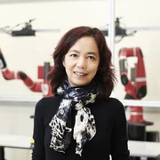
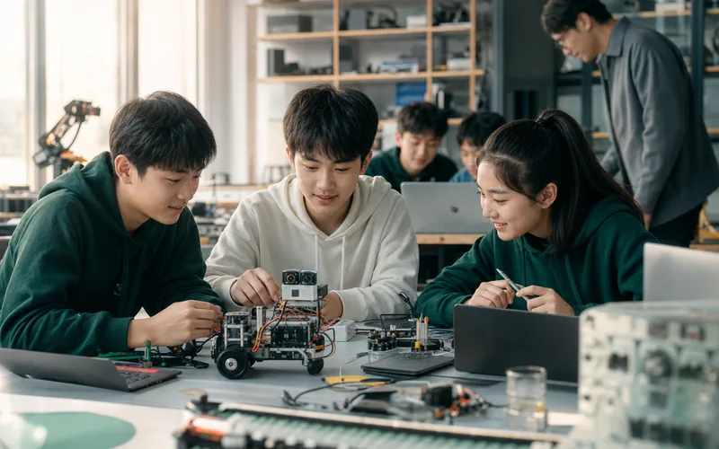
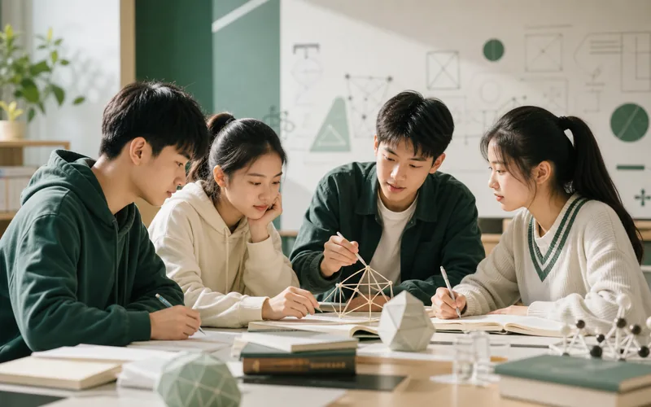
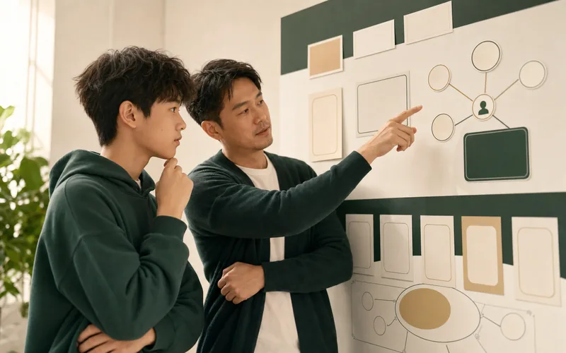
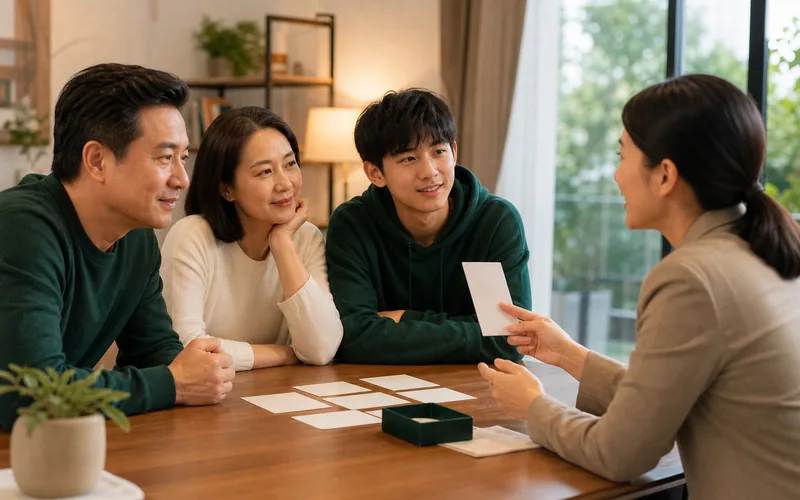
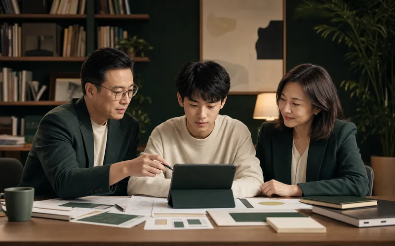

答案变多，判断变难
AI让信息和方案随手可得，但孩子更需要分辨真假、提出好问题、理解复杂情境，并为自己的选择负责。
01 时代之问
孩子面对的世界正在变化：知识获取更容易，选择却更复杂；工具更强大，人的判断、情绪、关系和行动反而更关键。真正的问题不再只是“学什么”，而是孩子能否在不确定中提出问题、判断方向、与人协作，并持续创造。
AI让信息和方案随手可得，但孩子更需要分辨真假、提出好问题、理解复杂情境，并为自己的选择负责。
学业压力、情绪波动、社交困境、行动力不足和家庭冲突，背后都指向更深层的心智发展问题。
02 六大核心心理困境
03 能力共识
当知识和答案变得越来越容易获得，孩子真正需要建立的，不只是使用AI的技巧，而是能独立判断、理解他人、持续创造，并在不确定中承担责任的底层能力。心悦星球构建的三维心智模型：认知思维、情感人性与意志心性，是我们面对未来挑战给出的系统性答案。
未来的差距不在于谁记住更多知识，而在于谁能提出问题、辨别真假、组织信息，并形成自己的判断。
思考力、共情力、抗压力都不是听懂道理就会形成的能力，必须在项目、协作、冲突、选择和复盘中反复练习。
Shared Signal

他提醒，语言正在成为AI的编程语言。关键不是把答案问出来，而是清楚表达目标、保留创造空间，并判断结果是否有效。

他认为AI可以成为无限耐心的个性化老师，但不能替孩子产生求知欲。真正的学习仍要靠好奇心、自驱力和真实实践。

他把学校里最重要的收获概括为两件事：学会学习新东西，以及产生真正新的想法。这正对应孩子面对AI时的长期竞争力。

教育的核心是学会思考、解决问题，并从失败中持续学习。

AI越强，人越需要跨学科理解、伦理判断和以人为中心的创造力。

学校最应该训练的是孩子优化自己学习方式的能力。
他看重远大志向、行动导向、前瞻视野和坚韧不拔，本质上都是把复杂问题持续向前推进的能力。

在AI重塑分工之后，孩子更需要创造力、同理心、跨学科理解和判断力，而不是只训练可被自动化的技能。

教育不只是追求成功，更要帮助孩子保留童真、责任感和社会化能力。
工具越来越强，最难的是找到关键问题，并组织技术和人去解决它。
技术舒适区可能削弱开拓精神，教育要守住人的探索欲。
04 我们的答案
心悦星球不把产品做成简单的课程清单，而是用三维心智模型组织所有产品：认知思维解决“如何判断世界”，情感人性解决“如何与人连接”，意志心性解决“如何面对压力和不确定”。
做AI的主人，不做信息的奴隶
发挥人类独有的温度优势
拥有应对变化的底层心力
06 心智产品系列

进入AI、机器人、工程与科学项目，在真实问题中训练判断、创造和协作。
在沙漠、草原、雪域、海岛、丛林等自然任务中训练韧性、勇气和团队连接。

以数学、语文、英语等学科为入口，训练逻辑、表达、理解和迁移能力。

帮助孩子看见兴趣、优势和未来可能，把自我认识转化为阶段行动。

支持亲子沟通、家庭协作和家长成长，让家庭成为孩子心智发展的稳定基地。

面向有明确成长课题的孩子与家庭，整合导师陪伴、科创项目、心理支持与阶段复盘。
 扫码了解营期
扫码了解营期